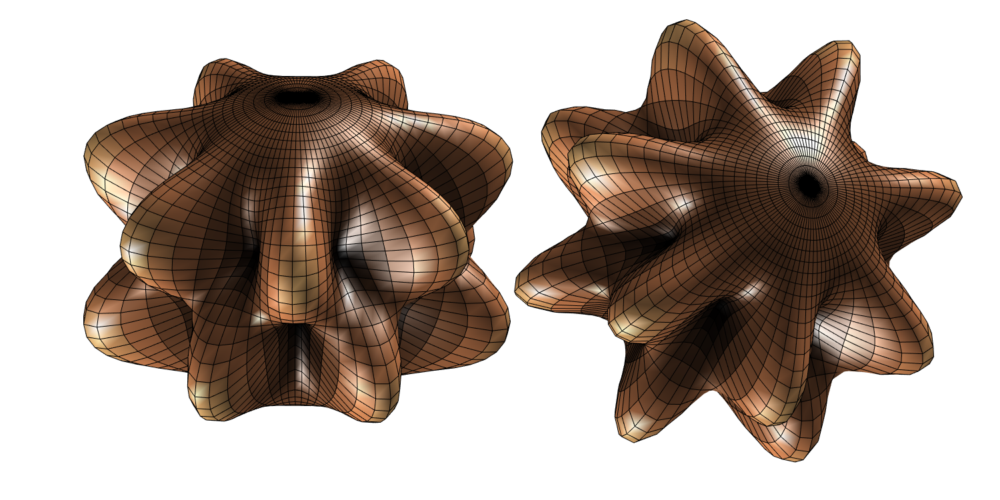
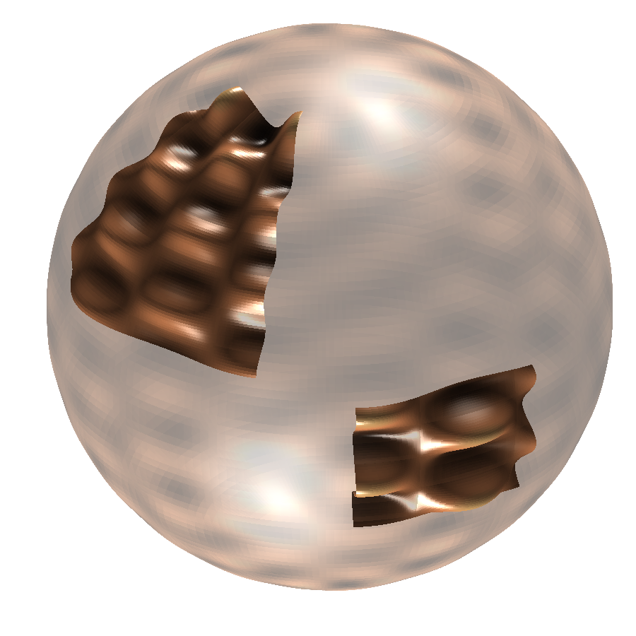

generate_spherical_harmonic.mNote that the spherical harmonic is not normalized since we are interested in the shape and not the scaling.
function [x,y,z,yyhat,name]= generate_spherical_harmonic( degree, order, type, theta1, theta2, phi1, phi2, rho_ref, rho_scale, alpha, beta, gamma, numt, nump )
%GENERATE_SPHERICAL_HARMONIC computes a mesh for a spherical harmonic
% degree - non-negative integer
% order - non-negative integer between 0 and degree (these are real spherical harmonics
% type - 0 means the cos type or real type, 1 means the sin type or image type
% theta1/theta2 start/end theta of patch (theta2<theta1 is permitted)
% phi1/phi2 start/end phi of patch (phi2<phi1 is permitted)
% rho_ref - radius of reference sphere; try 0.0 or 1.0
% rho_scale - multiplier for normalised (max(abs())=1) spherical harmonic; try 1.25 or 0.25
% alpha - third rotation in radians about z-axis
% beta - second rotation in radians about y-axis
% gamma - first rotation in radians about z-axis
% numt - grid size theta
% nump - grid size phi
% Map degree and order to valid ranges
degree=abs(degree);
order=min(abs(order),degree);
% Create the standard uniform grid in both angles
theta3=linspace(theta1*pi/180,theta2*pi/180,numt);
phi3=linspace(phi1*pi/180,phi2*pi/180,nump);
[theta,phi]=meshgrid(theta3,phi3);
% Calculate the bank of Legendre functions (of all orders)
Ylm=legendre(degree,cos(theta3));
if degree==0
Ylm=Ylm'; % thanks a lot matlab
end
% pull out the associated Legendre function of the desired order
Ylm=Ylm(order+1,:); % row of the desired order
yy=kron(ones(size(phi3')),Ylm); % repeat this row ready for multiplying with mesh phi term
% construct the SH
if type==0 % real part
yy=yy.*cos(order*phi);
elseif type==1 % imag part
yy=yy.*sin(order*phi);
end
% normalize SH so that it has values in range [-1,+1]
yymax=max(max(abs(yy)));
if yymax==0 % zero function
yyhat=zeros(size(yy));
else
yyhat=yy/yymax;
end
% map the SH value to the radial (height) value
rho_scale=max(rho_scale,0.005); % not too small
rhoabs=abs(rho_ref+rho_scale*yyhat);
% Apply spherical coordinate equations
x=rhoabs.*sin(theta).*cos(phi);
y=rhoabs.*sin(theta).*sin(phi);
z=rhoabs.*cos(theta);
% rotate the mesh according to zyz Euler rotation
R=RZRYRZdeg(alpha,beta,gamma);
Rxyz=R*[x(:) y(:) z(:)]'; % vectorize mesh matrices
% refill mesh matrices from vector answer Rxyz
x(:)=Rxyz(1,:)';
y(:)=Rxyz(2,:)';
z(:)=Rxyz(3,:)';
if type==0
name=sprintf('%02u-%02u-real',degree, order);
else
name=sprintf('%02u-%02u-imag',degree, order);
end
endRZRYRZdeg.mfunction [ R ] = RZRYRZdeg( alpha, beta, gamma )
%RZRYRZDEG Generates the 3x3 'zyz' matrix corresponding the Euler angles
% arguments in deg
% gamma is the first rotation about the z-axis
% beta is the second rotation about the y-axis
% alpha is the third rotation about the z-axis
alpha=alpha*pi/180;
beta=beta*pi/180;
gamma=gamma*pi/180;
Rz1=[cos(gamma) -sin(gamma) 0; sin(gamma) cos(gamma) 0; 0 0 1];
Ry=[cos(beta) 0 sin(beta); 0 1 0; -sin(beta) 0 cos(beta)];
Rz2=[cos(alpha) -sin(alpha) 0; sin(alpha) cos(alpha) 0; 0 0 1];
R=Rz2*Ry*Rz1;
endHere we demonstrate some uses of the above MATLAB® functions.
shex_01.mHere we pick one spherical harmonic corresponding to and and plot it without rotation (on the left) and with a rotation through Euler angles (in degree) , and (on the right). The rotation is achieved by rotating the mesh.
function []=shex_01()
set(gcf,'PaperUnits','inches','PaperPosition',[0 0 10 5]) %150dpi
colormap('copper')
subplot(1,2,1)
plonk(0,0,0)
subplot(1,2,2)
plonk(270,45,0)
saveas(gcf, 'figures/shex_01', 'png')
shg
end
function []=plonk(alpha,beta,gamma)
[x,y,z,f,name]= generate_spherical_harmonic(8,7,0, ...
0,180, 0,360, 1.25, 0.5, alpha,beta,gamma, 48, 96);
s=surf(x,y,z,f);
set(s,'LineWidth',0.1)
light % add a light
lighting gouraud % preferred lighting for a curved surface
lightangle(260,-45) % second fill-in light
maxa=1.8;
axis([-maxa maxa -maxa maxa -maxa maxa])
axis off
%set(s, 'edgecolor', 'none');
camzoom(2.0)
endshex_01.png
shex_02.mHere we overlay patches of a spherical harmonic on a transparent sphere.
function []=shex_02()
clf;
colormap('copper')
% transparent sphere
[x,y,z,f,~]=generate_spherical_harmonic(24,8,0, 0,180, 0,360, 1.25,0.0, 0,0,0, 96,192);
surf(x,y,z,f,'edgecolor','none','facealpha','0.3');
% setup scene
light % add a light
lightangle(260,-45) % second fill-in light
lighting gouraud % preferred lighting for a curved surface
axis equal off % set axis equal and remove axis
view(-75,30) % set viewpoint
camzoom(1.7)
hold on
% add a patch
[x,y,z,f,~]=generate_spherical_harmonic(24,8,0, 20,75, 120,180, 1.25,0.1, 0,0,0, 96,192);
surf(x,y,z,f,'edgecolor','none');
% add a patch
[x,y,z,f,~]=generate_spherical_harmonic(24,8,0, 80,110, 200,240, 1.25,0.1, 0,0,0, 96,192);
surf(x,y,z,f,'edgecolor','none');
set(gcf,'PaperUnits','inches','PaperPosition',[0 0 6 6]) %150dpi
saveas(gcf,'figures/shex_02','png')
hold off; shg
endshex_02.png
[06 Sep 2016] —
Latex labels with MATLAB®[21 Jul 2015] —
TikZ–tikzexternalize to png[18 Jul 2015] —
Spherical Harmonics LaTeX Macros[01 Aug 2015] —
BibDesk Publication html Export[06 Aug 2015] — Spherical Harmonic Plotting with MATLAB® [18 Jul 2015] —
Spherical Harmonics LaTeX Macros[16 Jul 2015] —
Spherical Harmonic MATLAB® Code 1[31 Jul 2015] —
Outputing png from pgfornament[18 Jul 2015] —
Improving Gauss-Legendre{kind=link}
{kind=link}